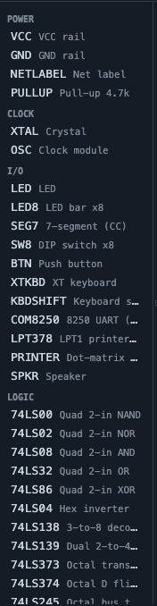
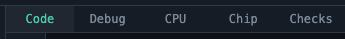
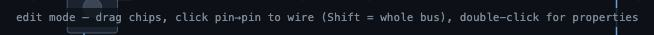
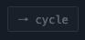
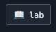
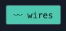
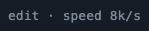
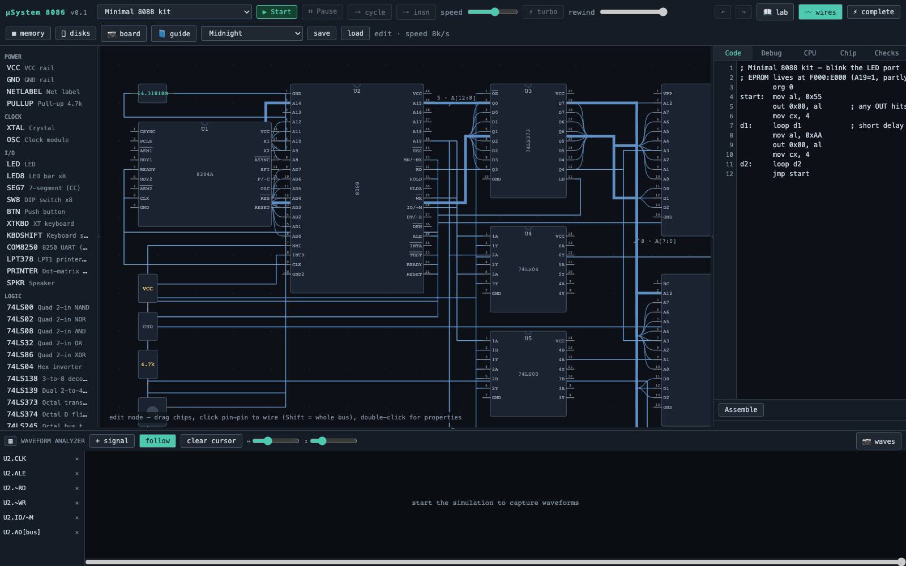
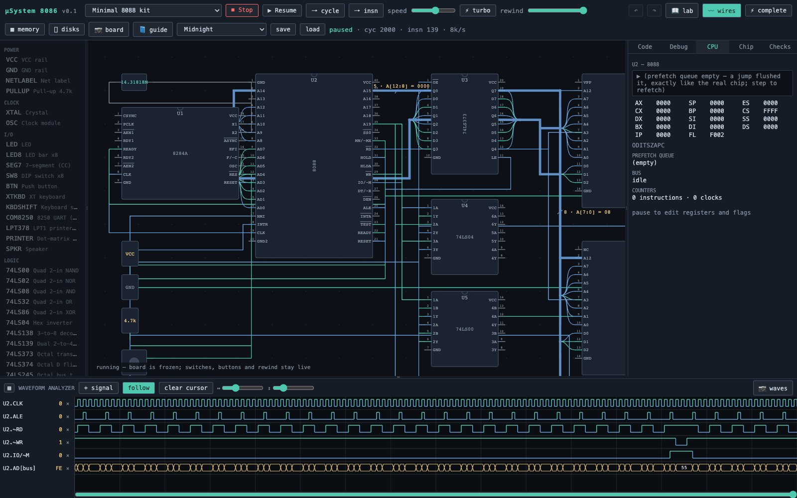
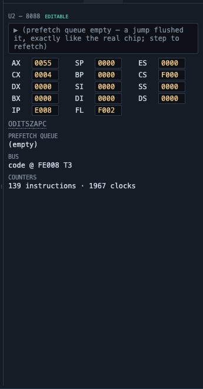

µSystem 8086 replaces a hardware trainer kit. Instead of a fixed board with fixed chips, you get the parts: a CPU, a clock generator, memories, decoders, latches, gates, peripheral controllers, and the devices that make a computer feel real — a monitor, a keyboard, a speaker, a printer, disk drives. You place them, wire them pin to pin, write assembly, and press Start. Every wire you draw carries a real logic level; every chip is simulated at its pins.
Two things make it more than a schematic toy. First, the CPU is cycle-accurate and passes the complete SingleStepTests/8088 suite — 3,007,000 of 3,007,000 tests exactly, flags included. Second, nothing about the board is declared: the address map is discovered by driving your real decode gates and watching which chip answers. If you wire it wrong, the tool shows you wrong — the same way an oscilloscope would.
Thirty-second start: pick Minimal 8088 kit in the preset dropdown, press ▶ Start, and watch the LEDs blink. Then press ⏸ Pause and ⭢ insn to walk the program one instruction at a time.
The workspace
The window is five regions: the toolbar across the top, the parts library on the left, the schematic canvas in the middle, the panel stack on the right (Code, Debug, CPU, Chip, Checks), and the waveform analyzer along the bottom. Every divider drags to resize and double-clicks to collapse, so any region can take the whole screen when you need it.




The toolbar




Panes



First run
Pressing Start runs the design checks, programs the ROMs from the Code tab, proves the memory map by probing the netlist, and builds the simulation. From that moment the board is frozen — you cannot move a chip while it runs — but switches, buttons, the keyboard and the rewind slider all stay live.

